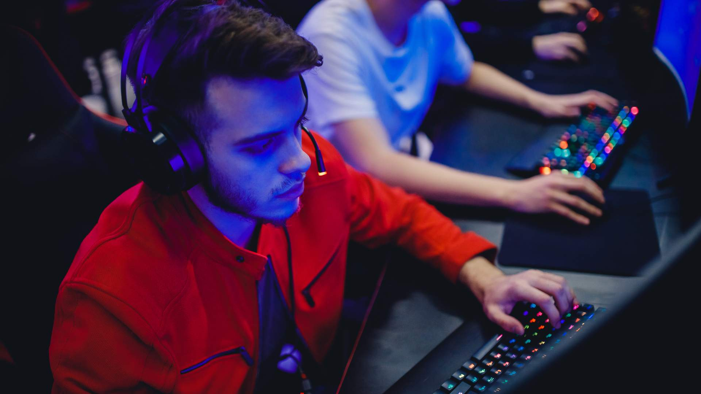
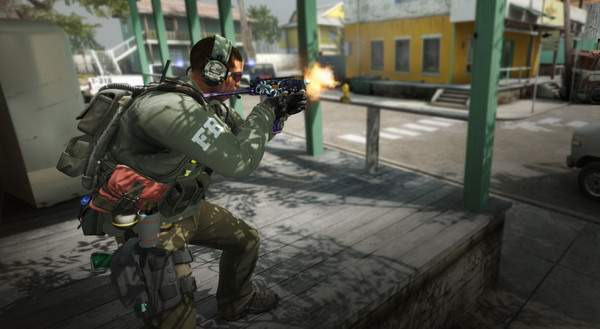
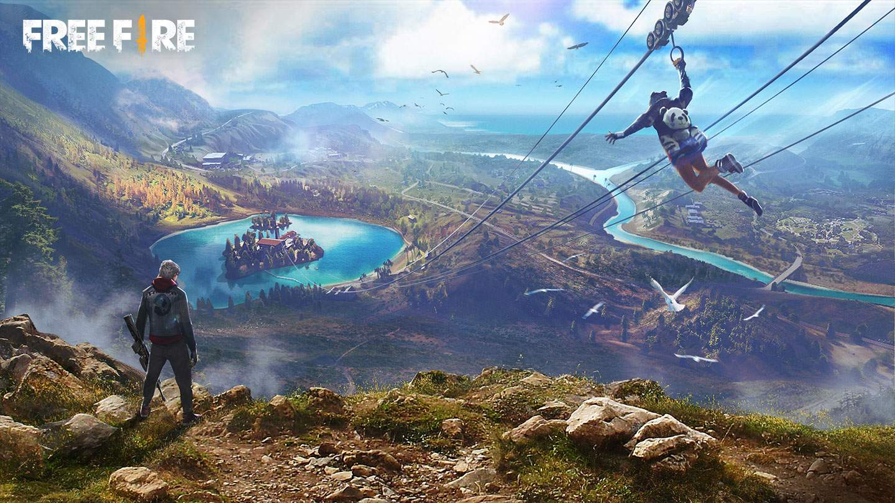

O que são jogos competitivos?
(Fonte: Shutterstock/Parilov)
Há cerca de 15 anos atrás, não existia uma intenção das produtoras em criar jogos competitivos. Muitos acabavam se tornando quase que por acidente. Tanto que alguns dos maiores jogos competitivos de PC que figuram nessa lista tem sua origem em modificações de outros games. Por exemplo, foi em uma modificação para Warcraft III, um dos melhores jogos de guerra de todos os tempos, que surgiram os MOBAs, por meio do primeiro Dota. Já Counter-Strike, fenômeno nas LAN Houses nos anos 2000, foi uma modificação de Half-Life, um dos jogos de tiro mais importantes da história. Isso porque não mencionamos os jogos de luta, uma das primeiras categorias de games a serem adaptados para o cenário competitivo. Uma das cenas mais impactantes dos eSports, por exemplo, é o EVO Moment #37, que mostrou uma vitória aparentemente impossível de Daigo Umehara (Ken) contra Justin Wong (Chun Li) em Street Fighter III.
Hoje, muitos jogos competitivos já são feitos com a intenção de criar uma comunidade competitiva, com torneios já sendo anunciados desde o lançamento do game. Tanto que são games dentro dessa categoria que disputam o título de jogo mais jogado no mundo em 2020. Entre games que foram criados com a intenção de se construir uma comunidade competitiva ou acidentes bem-vindos, confira a seguir os melhores jogos competitivos em 2021!
3.CS-GO
(Fonte: Valve/Divulgação)
Sigla para Counter-Strike: Global Offensive, essa edição é a que vem sendo jogada nos últimos anos. Sua estrutura permanece semelhante a do clássico: dois times se enfrentam, assumindo o papel de heróis ou vilões. Os objetivos de cada mapa adicionam variedade às partidas.
Além disso, você pode receber versões das armas em visuais alternativos, permitindo personalizar o seu personagem. O jogo também tem uma forte base de jogadores brasileiros, tanto amadores quanto profissionais. CS:GO é exclusivo para computadores.
PUBG Mobile
Versão mobile do bem-sucedido PlayerUnknown's Battlegrounds, PUBG Mobile possui a mesma estrutura do original. Só que ele adaptado para receber menos jogadores, o que tornaria o jogo no celular difícil de rodar. Outra diferença crucial entre essa versão e o original é que PUBG Mobile é gratuito, cobrando apenas por itens cosméticos que não alteram suas habilidades. De resto, a estrutura é bem parecida: aterrisse de paraquedas em uma ilha, encontre armas, itens e armaduras e seja o último a sobreviver. PUBG Mobile é otimizado para telas de toque, mas separa seus jogadores de acordo com o equipamento que escolhem usar. Por exemplo, se você tem um controle Bluetooth pareado com o celular, você só jogará com outras pessoas que também estão usando um controle. Se está acessando o jogo no computador por um emulador de Android, seus concorrentes estarão na mesma situação que você. Com uma comunidade bastante ativa e torneios online constante, PUBG Mobile também merece um lugar entre os jogos competitivos dessa lista. O game está disponível tanto no Android quanto no iPhone e iPad.
1.FREE FIRE
Free Fire pode não ser o jogo mais jogado no mundo em 2020, mas certamente foi o mais jogado no Brasil. O battle royale exclusivo para celulares tem como características as poucas exigências em relação ao desempenho, mas apresentando um jogo que funciona e diverte. O suficiente para que uma comunidade se forme ao redor dele. Tanto que já há campeonatos oficiais do jogo acontecendo de forma online aqui no Brasil e, antes mesmo da pandemia, alguns eventos presenciais. O game para smartphones também abriu mais portas a jogadores profissionais que não tinham acesso a computadores para aproveitar outros jogos do tipo, se tornando o mais acessível entre os jogos competitivos atualmente. Free Fire está disponível no Android e no iPhone.
Leia também: